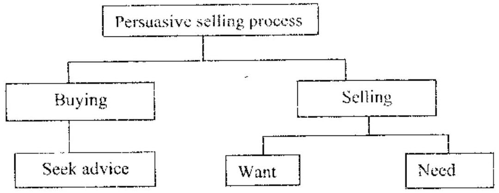

(Instructions were not clearly extracted from the PDF source. Typical instructions include: Write name/index, save work in KNECEXAM folder, answer all questions unless specified, printouts required, etc.)
Answer ALL questions.
All questions carry equal marks unless specified.
Passwords should NOT be used while saving files.
All files created MUST be saved in the KNECEXAM folder.
Make printouts of the answers on the answer sheets provided.
Hand in all the printouts and the storage medium.
Task 1 (Word Processing - 25 Marks)
Question 1 (a) (5 marks)
Open a word processing program and key in the following text as it appears. Save the document as Task1a in the KNECEXAM folder to print out later. (1 mark)
WORD PROCESSOR
A word processor is a computer application used for the production (including composition, editing, formatting and possibly printing) of any sort of printable material.
Word-processors typically feature a monochrome display and the ability to save documents on memory cards or (I) ROMS. Other models have introduced innovations such as spell-checking programs, increased formatting options, and dot-matrix printing.
Word processing implies the presence of text manipulation functions that extend beyond a basic ability to enter and change text, such as automatic generation of: batch mailings; indices of keywords; tables of contents; tables of figures; cross-referencing; Footnote numbering.
Insert a picture of a computer after the text "dot-matrix printing". (1 mark)
Apply square wrap style to the picture inserted in (i). (1 mark)
Set the line spacing height in the document to 1.5. (1 mark)
Save changes to print out later. (1 mark)
Question 1 (b) (3 marks)
Open a word processing program and create the document as it appears. Save the document as Task1b template in the KNECEXAM folder to print out later. (3 marks)
MEMORANDUM
DATE: [mm/dd/yy]
TO: [Name]
FROM: [Name]
CC: [Name]
RE: [Subject]
[Type memo text here]
Question 1 (c) (12 marks)
The chairman of Sports Links Distributors intends to send letters to individuals they met in a trade fair, informing them of his intended visit to their respective towns. He has requested you to use mail merge facility to enable him prepare the letters.
(i) Open a word processing program and key in the document below as it appears. Save the document as Task1c_1 in the KNECEXAM folder. (5 marks)
SPORTS LINK DISTRIBUTORS
P.O BOX 67453-00200
NAIROBI
KENYA
<<Title>> <<Name>>
<<Company>>
<<Address>>
<<City>>
<<Country>>
Dear <<Title>> <<Name>>,
Thank you for attending the trade fair. We will be coming to <<City>> next month and would like to show you our new <<Product>>.
Yours faithfully
Daniel
Chairman
(ii) Create a data source with the following information and save the document as Task1c_2 in the KNECEXAM folder. (2 marks)
Data Source
Title
Name
Company
Address
City
Country
Product
Mr
Guy McRae
Victory sports venture
23451
Nairobi
Kenya
Camping and adventure gear
Ms
Jackia Neta
Valley sports centre
89742
Dodoma
Tanzania
Camping gear
Mr
James Andaku
Worldwide Sports centre
89645
Kampala
Uganda
Outdoor cooking gear
(iii) Merge the data source to the Task1c_1 document. (1 mark)
(iv) Save the merged document as Task1c_3 in the KNECEXAM folder to print out later. (1 mark)
Answer
Disclaimer: Answers are AI-generated and may contain errors. Verify independently.
(a)
Open Microsoft Word.
Type the provided text under the heading "WORD PROCESSOR".
Place the cursor after "dot-matrix printing.".
Go to the "Insert" tab > "Pictures" (or "Online Pictures") and insert an image of a computer.
Select the inserted picture.
Go to the "Picture Format" (or "Format") tab > "Wrap Text" > "Square".
Select all the text (Ctrl+A).
Go to the "Home" tab > "Paragraph" group > click the dialog box launcher (small arrow).
Under "Spacing", set "Line spacing" to "1.5 lines". Click "OK".
Go to "File" > "Save As". Navigate to the KNECEXAM folder. Save the file as `Task1a.docx`.
(b)
Open Microsoft Word.
Type "MEMORANDUM" and format it as a centered heading (e.g., bold, larger font size).
Type the rest of the text exactly as shown, including the bracketed placeholders. Use appropriate spacing.
Go to "File" > "Save As". Navigate to the KNECEXAM folder.
In the "Save as type" dropdown, select "Word Template (*.dotx)".
Save the file as `Task1b template`.
(c)
Create Main Document (Task1c_1): Type letter with `<>`. Save as `Task1c_1.docx`.
Create Data Source (Task1c_2): Use Word table or Excel. Enter headers and data. Save as `Task1c_2.docx` or `.xlsx`.
Perform Mail Merge: Open `Task1c_1.docx`. Go to Mailings tab. Start Mail Merge > Letters. Select Recipients > Use Existing List > Select `Task1c_2`. Match/Insert Merge Fields. Preview Results. Finish & Merge > Edit Individual Documents > All.
Save Merged Document (Task1c_3): Save the new document containing all letters as `Task1c_3.docx`.
Task 2 (Spreadsheet - 25 Marks)
Question 2 (a) (5 marks)
(i) Open a spreadsheet program and key Figure 1 in sheet 1 as it appears. Save the workbook as Task 2 in the KNECEXAM folder to print out later. (3 marks)
Figure 1 (Initial Data Entry)
A
B
C
D
E
F
G
H
I
1
Item
Quantity
Buying Price per item in KES
Selling Price per Item in KES
Quantity sold
Cost
Sales
New Selling Price
Remarks
2
PVC Spring Files
445
100
120
138
3
Hardcover Notebooks
330
48
62
121
4
Clipboards
198
70
85
120
5
Reams of Photocopy Papers
375
550
580
166
6
200 pg Exercise Book
466
28
40
140
7
Geometrical Sets
126
185
225
100
8
Totals
9
10
Price increment
0.06
Figure 1
(ii) Insert a row in row 1 and merge the cells A1:I1. (1 mark)
(iii) Key in the following text as a title in A1:I1. (1 mark)
SUPERIOR STATIONERY LIMITED
Question 2 (b) (12 marks)
Using an appropriate formula and cell addresses only, calculate the:
Cost for each item. (1 mark)
Sales for the quantities sold. (1 mark)
Total Cost and Total Sales for all items. (2 marks)
Format the worksheet as follows:
Set all the prices to KES. (1 mark)
Fill the Cost column with green color. (1 mark)
Suppose the selling price of the items in the company went up by 6%.
Using cell addresses only, determine the new selling prices for each item. (2 marks)
Format the new prices to two decimal places. (1 mark)
Using an appropriate formula, determine the Stock Balance for each stock item. (2 marks)
Using the IF function, insert an appropriate remark for each stock item in the Remarks column as follows; if the Stock Balance falls below 150 insert the comment `Reorder`; if the Stock Balance exceeds 400 insert the comment `Excess` otherwise insert the comment `OK`. (3 marks)
Question 2 (c) (3 marks)
Create a 3D clustered column chart in sheet2 showing Cost and Sales for each item. Label the chart appropriately. (3 marks)
Question 2 (d) (2 marks)
Save the changes to print out later:
sheet1 showing the formulae used instead of values; (1 mark)
the chart. (1 mark)
Answer
Disclaimer: Answers are AI-generated and may contain errors. Verify independently.
(a)
Open Excel. Enter data as shown in Figure 1 (starting A1).
Add Chart Title (e.g., "Cost vs Sales"). Add Axis Titles ("Item", "Amount (KES)"). Ensure Legend is visible.
(d)
Go to Sheet1. Formulas tab > Show Formulas. Adjust column widths. Prepare for printing.
Go to Sheet2. Prepare chart sheet for printing.
Save the workbook.
Task 3 (Database - 25 Marks)
Matibabu is a recently opened outpatient clinic offering consultation services as well as dispensing drugs. The management intends to set up a database to ensure the smooth running of its clinic.
Question 3 (a) (1 mark)
Open a database program and create a new database. Save the database as Task 3 in the KNECEXAM folder. (1 mark)
Question 3 (b) (6 marks)
(i) Create the following tables in the database created in (a). Set appropriate primary keys. (4 marks)
DoctorData
Field Name
Data Type
Size
Specifications
DoctorCode
Text
15
Primary key
DoctorName
Text
25
PatientData
Field Name
Data Type
Size
Specifications
PatientID
Text
15
Primary key
PatientName
Text
25
PatientSex
Text
1
DrugData
Field Name
Data Type
Size
Specifications
DrugCode
Text
15
Primary key
DrugName
Text
50
Price
Currency
PatientVisitation
Field Name
Data Type
VisitationDate
Date/Time
PatientID
Text
PatientName
Text
DoctorCode
Text
DrugCode
Text
(ii) Create appropriate relationships between the tables. Enforce referential integrity. (2 marks)
Question 3 (c) (7 marks)
(i) Create data entry forms for each table. Save the forms as follows: DoctorDetails, PatientDetails, DrugDetails and PatientVisitation respectively to print out later. (2 marks)
(ii) Using the forms created in (i) enter the following data into the respective tables. (5 marks)
DoctorDetails
DoctorCode
DoctorName
GNT/023
Dr. Marvin
HPR/411
Dr. Bora
RMT/175
Dr. Hari
PatientDetails
PatientID
PatientName
PatientSex
GTP/101
James David
M
GTP/103
Peter Almond
M
GTP/105
Joy Frida
F
DrugDetails
DrugCode
DrugName
Price
1234/2012
Amoxil Tabs
100
1367/2012
Ventolin
234
1369/2012
Morphine
1000
1009/2012
Nasal Drops
980
PatientVisitation
VisitationDate
PatientID
PatientName
DoctorCode
DrugCode
01/11/2012
GTP/103
Peter Almond
HPR/411
1009/2012
15/12/2012
GTP/105
Joy Frida
RMT/175
1234/2012
21/12/2012
GTP/101
James David
HPR/411
1367/2012
Question 3 (d) (3 marks)
Create a report to display all patients who have bought drugs showing PatientName, PatientID, Doctor consulted (DoctorName), Drug name and DrugCode. Save the report as PatientReport in the KNECEXAM folder to print out later. (3 marks)
Answer
Disclaimer: Answers are AI-generated and may contain errors. Verify independently.
(a)
Open Microsoft Access.
Select "Blank database".
File Name: `Task 3`. Browse to KNECEXAM folder.
Click "Create".
(b)
Create Tables: Use Create > Table Design. Add fields, set data types/sizes. Set Primary Keys. Save tables (`DoctorData`, `PatientData`, `DrugData`, `PatientVisitation`).
Relationships: Database Tools > Relationships. Add all tables. Drag PKs to FKs (DoctorCode, PatientID, DrugCode) in `PatientVisitation`. Check "Enforce Referential Integrity". Create and Save layout.
(c)
Create Forms: Select each table > Create tab > Form. Save with names: `DoctorDetails`, `PatientDetails`, `DrugDetails`, `PatientVisitation`.
Enter Data: Open each form. Enter the data provided for each table.
Create Report: Select `qryPatientDrugs`. Create > Report Wizard. Add all fields. No grouping/sorting. Choose layout. Title: `PatientReport`. Finish. Save.
Task 4 (Presentation Graphics - 25 Marks)
Hodson the marketing manager of Urembo cosmetics intends to use a presentation program during a workshop being organised. He has requested you to assist in preparing the presentation slides as outlined.
Question 4 (a) (10 marks)
Open a presentation program and create the slides. Use appropriate slide layout for each slide. Save the presentation as Task 4 in the KNECEXAM folder. (10 marks)
Slide No
Slide content
1
MARKETING WORKSHOP
2
Workshop objectives At the end of this workshop:
Give you the knowledge and skills needed in marketing
Practice the selling skills
Build a plan for you to make a successful sales call
3
Types of selling
4
Persuasive selling process
5
Planning and preparation Before the call 1. Smart objective from CRC 2. Benefits 3. Needs from the benefits
6
Evaluation
Question 4 (b) (8 marks)
Create the diagram below in slide 4. (4 marks)

Figure 1: Persuasive selling process diagram
Insert Table 1 in slide 6. (3 marks)
Table 1
Setting objective
Planning and preparation
Presentation skills
Close and order
Group 1
45
43
46
42
Group 2
48
42
45
43
Group 3
40
44
45
43
Group 4
42
45
46
41
Insert the following to all slides:
Footer as "Sales and Marketing Workshop"; (1 mark)
Slide number. (1 mark)
Question 4 (c) (2 marks)
Apply the following transition properties to all slides:
transition: Wipe down; (1 mark)
speed: slow. (1 mark)
Question 4 (d) (1 mark)
Save the changes to print out later the handouts with 3 slides per page. (1 mark)
Answer
Disclaimer: Answers are AI-generated and may contain errors. Verify independently.
(a)
Open PowerPoint.
Slide 1: Title Slide layout. Title: MARKETING WORKSHOP.
Slide 2: Title and Content layout. Title: Workshop objectives. Add bullet points.
Slide 3: Title Only layout. Title: Types of selling.
Slide 4: Title Only layout. Title: Persuasive selling process.
Slide 5: Title and Content layout. Title: Planning and preparation. Add numbered list.
Slide 6: Title Only layout. Title: Evaluation.
Save presentation as `Task 4.pptx` in KNECEXAM folder.
(b)
Diagram (Slide 4): Use Insert > SmartArt (Process) or Shapes to recreate the diagram. Add text.
Table (Slide 6): Insert > Table (5x5). Enter data. Format.
Footer/Number: Insert > Header & Footer. Check "Slide number". Check "Footer", type "Sales and Marketing Workshop". Click "Apply to All".
(c)
Transitions tab > Select "Wipe".
Effect Options > "From Top".
Timing group > Duration: Increase value for "Slow" (e.g., 2.00s).